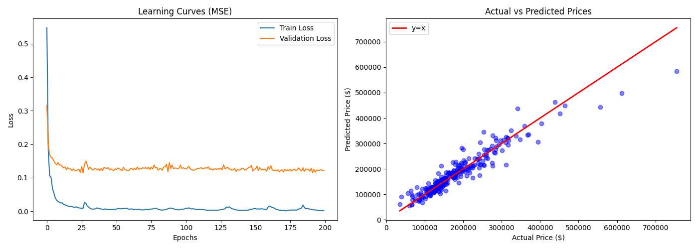
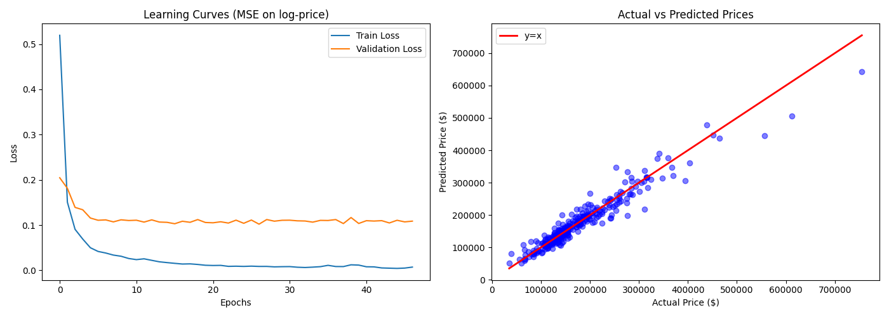

中山大学计算机学院
| 学号 | 24325147 | 姓名 | 李宇浩 |
编写 Python 代码，实现多层感知机（MLP）模型，对房价数据集进行回归预测。
多层感知机（Multi-Layer Perceptron, MLP）是最经典的前馈神经网络架构之一。它由输入层、若干隐藏层和输出层组成，层与层之间全连接，每个连接对应一个可学习的权重参数。MLP 通过多层非线性变换，理论上可以逼近任意连续函数，因此广泛应用于分类和回归任务。
（1）神经元模型：
神经网络的基本单元是“神经元”。一个神经元接收来自上一层所有神经元的输出 x1, x2, ..., xn，对每个输入乘以对应的权重 w1, w2, ..., wn，加上偏置 b，然后通过激活函数 σ(·) 得到输出：a = σ(Σ wixi + b)。其中，偏置 b 允许神经元在输入全为零时仍能产生非零输出，增强了模型的表达能力。
（2）前向传播：
给定输入向量 x，前向传播将数据逐层向前传递，最终输出预测值。对于第 l 层，其计算可表示为：
z(l) = W(l) · a(l−1) + b(l)
a(l) = σ(z(l))
其中 W(l) 为第 l 层的权重矩阵（尺寸为 nl × nl−1），b(l) 为偏置向量，σ 为激活函数，a(0) 即为输入 x，a(L) 为最终输出。
（3）激活函数：
如果网络中仅有线性变换，多层堆叠等价于单层线性变换，无法拟合非线性函数。激活函数正是为了引入非线性。常用的激活函数包括：
Sigmoid：σ(x) = 1/(1 + e−x)
Tanh：σ(x) = (ex − e−x)/(ex + e−x)
ReLU：σ(x) = max(0, x)
（4）损失函数：
损失函数衡量预测值 ŷ 与真实值 y 之间的差距。一种常用的损失函数是均方误差，即 MSE = (1/n) Σ (ŷ - y)2。
（5）反向传播：
反向传播是训练神经网络的核心算法，它利用链式法则高效计算损失函数对每层参数的梯度，首先通过前向传播得到预测值并计算损失 Loss；然后从输出层开始，逐层向后计算损失对各层权重和偏置的偏导数。
（6）梯度下降与参数更新：
计算出梯度后，需沿梯度的反方向更新参数，使损失函数逐步减小。W = W − η · ∂L/∂W，其中 η 是学习率，控制每次更新的步长。
（1）数据加载与预处理：
# 加载数据并进行预处理：Xy分离→缺失值填充/有序特征映射→One-Hot编码→标准化 def load_and_preprocess_data(file_path): data = pd.read_csv(file_path) # 分离特征和目标变量 X = data.drop(['Id', 'SalePrice'], axis=1) y_raw = data['SalePrice'].values.reshape(-1, 1) # 缺失值填充——使用中位数 zero_fill_cols = ['LotFrontage', 'MasVnrArea', 'GarageYrBlt', ...] for col in zero_fill_cols: if col in X.columns: X[col] = X[col].fillna(X[col].median()) # 有序特征映射：将等级字符串转换为数值 qual_map = {'Ex': 5, 'Gd': 4, 'TA': 3, 'Fa': 2, 'Po': 1, 'NA': 0} fin_type_map = {'GLQ': 6, 'ALQ': 5, 'BLQ': 4, 'Rec': 3, 'LwQ': 2, 'Unf': 1, 'NA': 0} # ... 其他映射（BsmtExposure、Functional、GarageFinish） for col, mapping in ordinal_maps.items(): if col in X.columns: X[col] = X[col].map(mapping).fillna(0) # 无序类别特征进行独热编码 categorical_cols = X.select_dtypes(include=[object]).columns remaning_cats = [c for c in categorical_cols if c not in ordinal_maps.keys()] X = pd.get_dummies(X, columns=remaning_cats) # 目标值对数变换，缓解右偏分布 y = np.log1p(y_raw) # 先划分再标准化，避免数据泄露 X_train, X_val, y_train, y_val = train_test_split(X, y, test_size=0.2, random_state=42) scaler_x = StandardScaler() X_train_scaled = scaler_x.fit_transform(X_train) X_val_scaled = scaler_x.transform(X_val) scaler_y = StandardScaler() y_train_scaled = scaler_y.fit_transform(y_train) y_val_scaled = scaler_y.transform(y_val) return X_train_scaled, X_val_scaled, y_train_scaled, y_val_scaled, scaler_y
（2）MLP类：
# 定义双层隐藏层的 MLP 回归网络：input_dim → 128 → 128 → 1 class MLP(nn.Module): def __init__(self, input_dim): super(MLP, self).__init__() self.net = nn.Sequential( nn.Linear(input_dim, 128), # 输入层 → 隐藏层1 nn.ReLU(), # ReLU 激活 nn.Linear(128, 128), # 隐藏层1 → 隐藏层2 nn.ReLU(), # ReLU 激活 nn.Linear(128, 1) # 隐藏层2 → 输出（回归值） ) def forward(self, x): return self.net(x)
（3）训练函数：
def train_model(model, X_train, y_train, X_val, y_val, epochs=2000, lr=0.001, batch_size=64, patience=500):
# 转换为张量并创建 DataLoader
X_train_t = torch.FloatTensor(X_train)
y_train_t = torch.FloatTensor(y_train)
X_val_t = torch.FloatTensor(X_val)
y_val_t = torch.FloatTensor(y_val)
dataset = TensorDataset(X_train_t, y_train_t)
loader = DataLoader(dataset, batch_size=batch_size, shuffle=True)
# Adam 优化器：自适应学习率，结合动量与 RMSprop 优点
optimizer = optim.Adam(model.parameters(), lr=lr, weight_decay=1e-3)
# 均方误差损失
criterion = nn.MSELoss()
train_history = []
val_history = []
best_val_loss = float('inf')
best_epoch = 0
patience_counter = 0
best_model_state = None
for epoch in range(epochs):
# 训练阶段：前向传播、计算损失、反向传播、参数更新
model.train()
for bx, by in loader:
optimizer.zero_grad() # 清空前一步梯度
pred = model(bx) # 前向传播
loss = criterion(pred, by) # 计算 MSE
loss.backward() # 反向传播，计算梯度
optimizer.step() # Adam 更新参数
batch_losses.append(loss.item())
train_loss = np.mean(batch_losses)
# 验证阶段
model.eval()
with torch.no_grad():
val_pred = model(X_val_t)
val_loss = criterion(val_pred, y_val_t).item()
train_history.append(train_loss)
val_history.append(val_loss)
# 早停判断（基于验证损失）
if val_loss < best_val_loss:
best_val_loss = val_loss
best_epoch = epoch
patience_counter = 0
best_model_state = {k: v.cpu().clone() for k, v in model.state_dict().items()}
else:
patience_counter += 1
if (epoch + 1):
print(f"Epoch {epoch+1:3d}: Train Loss={train_loss:.4f}, Val Loss={val_loss:.4f}")
# 早停触发
if patience_counter >= patience:
print(f"Early stopping at epoch {epoch+1}, best val loss = {best_val_loss:.4f} at epoch {best_epoch+1}")
break
# 获取最佳权重
if best_model_state is not None:
model.load_state_dict(best_model_state)
print(f"Training finished. Best validation loss: {best_val_loss:.4f}")
return train_history, val_history
（1）数据处理： 对数字型特征进行中位数填充，更好的表示数据的中心趋势；对有序类文本特征进行映射，将特征映射为数值型，增强模型的稠密度；对无需类文本特征进行One-Hot编码，将模型无法理解的文字转化为可计算的数字。
（2）对数变换：
房价数据通常呈现右偏分布——极少数豪宅的价格远高于普通住宅。直接对原始价格进行回归，MSE 损失会被这些极端值影响，导致模型在中高等价位房屋上预测偏差较大。代码使用 np.log1p(y) 对目标变量取对数，使分布更接近正态分布，训练更加稳定。在预测阶段通过 np.expm1() 进行反变换恢复为原价格，保证了最终结果的可用性。
（3）数据集划分及标准化： 代码先进行 train_test_split 将数据集分为训练集和验证集，再用训练集的均值和标准差去变换验证集。如果先进性标准化再进行划分，则会导致验证集信息泄露到训练集中，使得验证评估结果出现偏差，无法真实反映模型的泛化能力。
（4）早停机制与最佳模型恢复： 代码引入了早停策略：训练过程中持续记录验证损失的最小值，若连续 patience 个 epoch 未见改善则提前终止训练，并加载回验证损失最小的模型权重。这既节省了训练时间，也自动确定了最佳的训练轮数，避免了欠拟合或过拟合。
（5）Adam 优化器 + L2 正则化： Adam 优化器自适应调整学习率，省去了手动调参的繁琐；weight_decay=1e-3 通过 L2 正则化约束权重大小，有效抑制过拟合。
运行 MLP.py，结果如下：
epoch = 200, 显示轮次间隔 = 20，早停轮次 = 0，未对数化：
Epoch 20: Train Loss=0.0125, Val Loss=0.1263
Epoch 40: Train Loss=0.0068, Val Loss=0.1275
Epoch 60: Train Loss=0.0057, Val Loss=0.1214
Epoch 80: Train Loss=0.0078, Val Loss=0.1308
Epoch 100: Train Loss=0.0073, Val Loss=0.1278
Epoch 120: Train Loss=0.0033, Val Loss=0.1232
Epoch 140: Train Loss=0.0028, Val Loss=0.1235
Epoch 160: Train Loss=0.0129, Val Loss=0.1329
Epoch 180: Train Loss=0.0031, Val Loss=0.1214
Epoch 200: Train Loss=0.0016, Val Loss=0.1219

epoch = 50, 显示轮次间隔 = 1，早停轮次 = 20，已对数化：
Epoch 1: Train Loss=0.5195, Val Loss=0.2047
Epoch 2: Train Loss=0.1507, Val Loss=0.1814
Epoch 3: Train Loss=0.0908, Val Loss=0.1392
Epoch 4: Train Loss=0.0693, Val Loss=0.1340
Epoch 5: Train Loss=0.0500, Val Loss=0.1157
Epoch 6: Train Loss=0.0419, Val Loss=0.1108
Epoch 7: Train Loss=0.0384, Val Loss=0.1116
Epoch 8: Train Loss=0.0338, Val Loss=0.1072
Epoch 9: Train Loss=0.0313, Val Loss=0.1118
Epoch 10: Train Loss=0.0263, Val Loss=0.1102
Epoch 11: Train Loss=0.0238, Val Loss=0.1109
Epoch 12: Train Loss=0.0256, Val Loss=0.1067
Epoch 13: Train Loss=0.0222, Val Loss=0.1116
Epoch 14: Train Loss=0.0189, Val Loss=0.1068
Epoch 15: Train Loss=0.0172, Val Loss=0.1062
Epoch 16: Train Loss=0.0156, Val Loss=0.1031
Epoch 17: Train Loss=0.0140, Val Loss=0.1086
Epoch 18: Train Loss=0.0144, Val Loss=0.1063
Epoch 19: Train Loss=0.0131, Val Loss=0.1123
Epoch 20: Train Loss=0.0113, Val Loss=0.1059
Epoch 21: Train Loss=0.0108, Val Loss=0.1052
Epoch 22: Train Loss=0.0111, Val Loss=0.1074
Epoch 23: Train Loss=0.0089, Val Loss=0.1046
Epoch 24: Train Loss=0.0092, Val Loss=0.1110
Epoch 25: Train Loss=0.0088, Val Loss=0.1041
Epoch 26: Train Loss=0.0094, Val Loss=0.1113
Epoch 27: Train Loss=0.0088, Val Loss=0.1022
Epoch 28: Train Loss=0.0088, Val Loss=0.1123
Epoch 29: Train Loss=0.0078, Val Loss=0.1087
Epoch 30: Train Loss=0.0082, Val Loss=0.1107
Epoch 31: Train Loss=0.0084, Val Loss=0.1109
Epoch 32: Train Loss=0.0070, Val Loss=0.1095
Epoch 33: Train Loss=0.0064, Val Loss=0.1091
Epoch 34: Train Loss=0.0072, Val Loss=0.1066
Epoch 35: Train Loss=0.0082, Val Loss=0.1106
Epoch 36: Train Loss=0.0112, Val Loss=0.1103
Epoch 37: Train Loss=0.0085, Val Loss=0.1123
Epoch 38: Train Loss=0.0084, Val Loss=0.1035
Epoch 39: Train Loss=0.0123, Val Loss=0.1168
Epoch 40: Train Loss=0.0117, Val Loss=0.1037
Epoch 41: Train Loss=0.0080, Val Loss=0.1098
Epoch 42: Train Loss=0.0077, Val Loss=0.1090
Epoch 43: Train Loss=0.0054, Val Loss=0.1099
Epoch 44: Train Loss=0.0049, Val Loss=0.1048
Epoch 45: Train Loss=0.0044, Val Loss=0.1107
Epoch 46: Train Loss=0.0051, Val Loss=0.1072
Epoch 47: Train Loss=0.0073, Val Loss=0.1089
Early stopping at epoch 47, best val loss = 0.1022 at epoch 27
Training finished. Best validation loss: 0.1022

学习曲线（Learning Curves）：
训练损失和验证损失均在最初几轮迅速下降，随后趋于平稳，从第二次运行结果的停止轮以及早停延迟可以看出，在十余次迭代后模型便趋近极值。对数化前，验证损失在趋近0.12，对数化后，验证损失明显降低至0.10-0.11，但均与训练损失差距较大，说明模型疑似出现过拟合现象。振荡来自于 Mini-Batch SGD 的随机性，这是正常的训练现象。
预测值-真实值散点图：
散点图显示大部分数据点紧密分布在 y=x 红线附近，说明模型对中等价位（$100,000 ~ $300,000）房屋的预测较为准确。在高价位区域（>$400,000），数据点开始发散，预测误差有所增大，但是处于此区间的样本数量较少，这是房价数据本身的稀疏性和高方差特性所导致的。
1. 课程课件：感知机.pdf
2. PyTorch 官方文档：https://pytorch.org/docs/stable/index.html
3. 数据集来源（Kaggle - House Prices）：https://www.kaggle.com/c/house-prices-advanced-regression-techniques